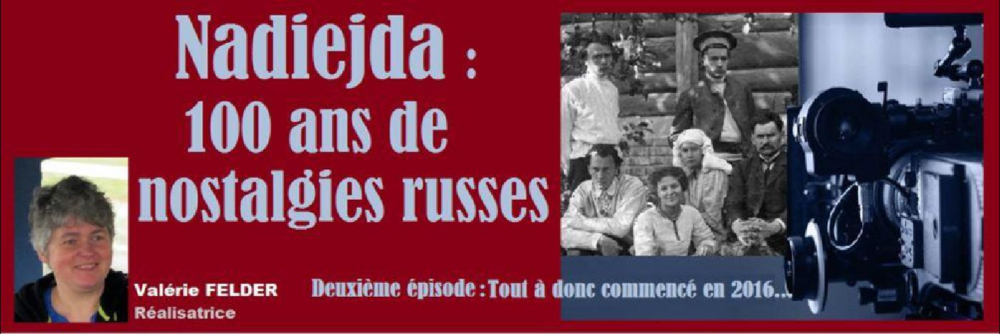
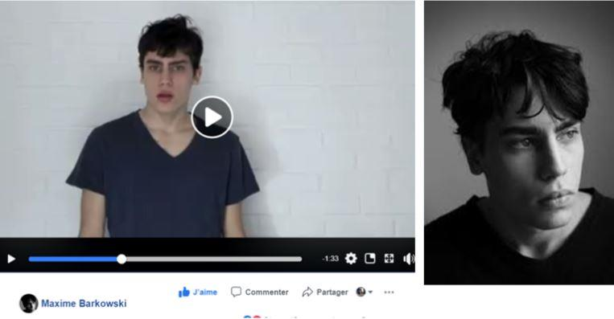
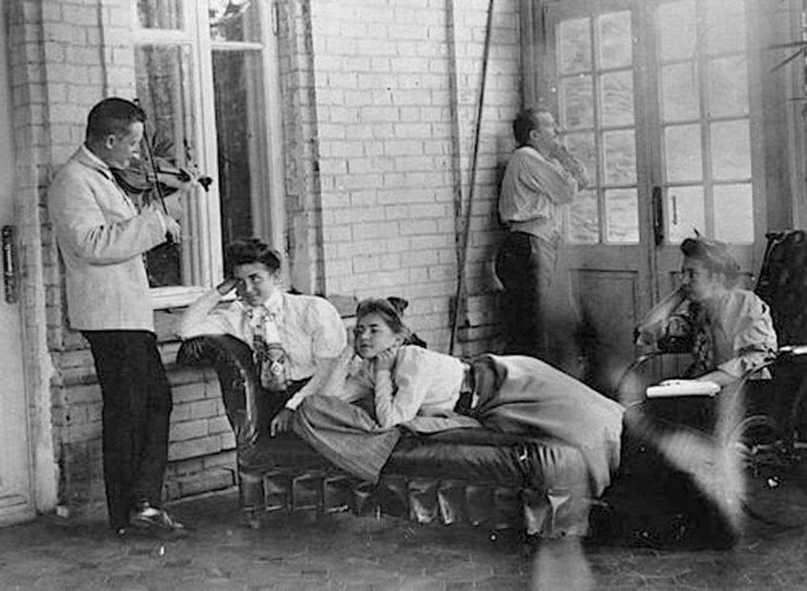
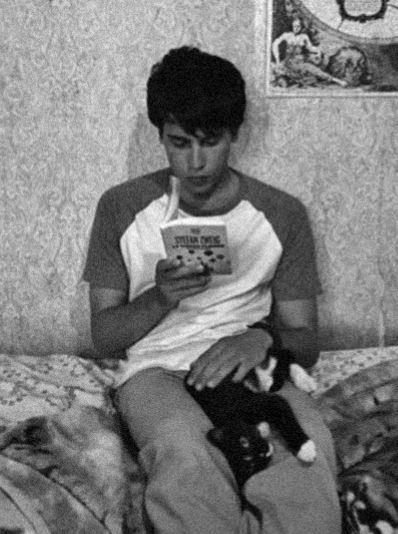
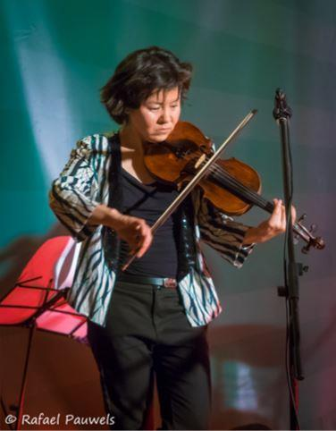
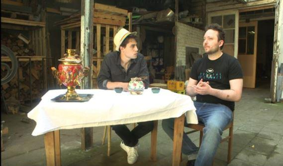
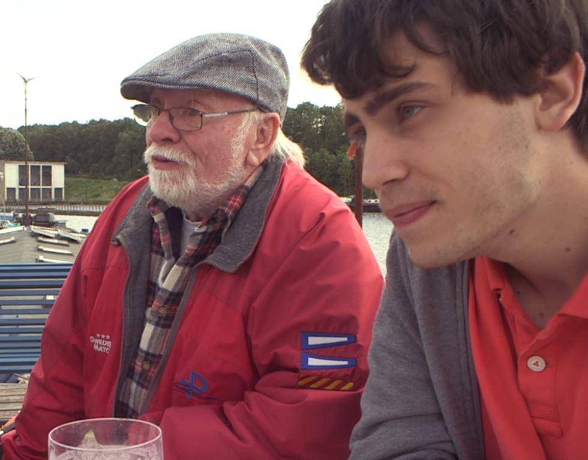
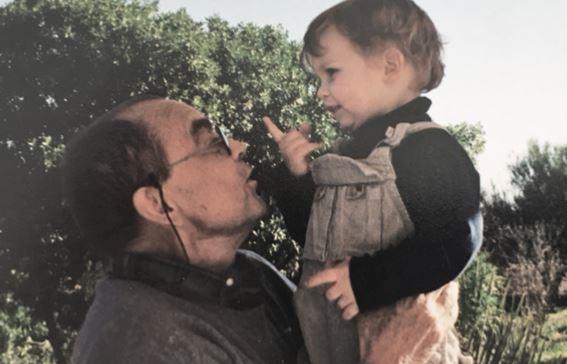

Nadiejda : 100 ans de nostalgies russes. Deuxième épisode : Tout à donc commencé en 2016…
par Valérie FELDER

Après avoir élaboré un plan de travail1, je découvrais sur les réseaux sociaux une vidéo réalisée par Maxime Barkowski, le fils de ma cousine. Maxime étudie aujourd'hui dans une école de cinéma au Québec. Il déclamait avec beaucoup de talent un texte de Victor Hugo.

Décembre 2014 : à ceux que l'on oublie de Victor Hugo .Un texte hélas toujours d'actualité...
23 mai 2016, je prenais contact avec lui pour lui exposer mon projet qui partira de mon histoire qui est aussi la sienne pour ensuite élargir le propos aux immigrés russes de première génération, puis celles qui ont suivi jusqu’à aujourd’hui d’un double point de vue, à la fois culturel et émotionnel, et non historique ou politique.
Je lui propose directement d’assurer la voix off du documentaire.
Quelques heures plus tard, il me répondait déjà qu'il était très intéressé. Il se dit en effet intrigué par ses lointaines racines russes qu’il rattache à la personne de son grand-père, Badji. Il se dit intrigué par mes recherches en tant que simple spectateur, et il ajoute : « … alors pouvoir t'aider dans ce projet serait vraiment génial... Je suis donc partant pour te servir de voix-off et faire de mon mieux ! »
LA PLACE DE LA LITTÉRATURE DANS LE FILM EST LIÉE À LA PERSONNALITÉ DE MAXIME
Très vite, je me suis rendue à l'évidence : il était ridicule de lui faire faire une voix off alors qu'il serait bien mieux devant la caméra. Nous avons eu de nombreux échanges écrits. Nous avons appris à mieux nous connaître : il me posait des questions sur notre famille, qui elle était en Russie. Je lui demandais par exemple quels étaient les films et les auteurs qu'il aimait. Cela m'a permis de repenser le fil de l'histoire en tenant compte de mon héros.
D'une part, ces questionnements : comment vivait notre famille en Russie avant la révolution ? Que sont devenus leurs descendants ? Qui est resté ? Qui est parti ? Qu'étaient-ils tous devenus ? Nous en parlerons dans un prochain épisode. Et, de l'autre, je commençais à mieux cerner ce qu’il pouvait apporter au film à travers sa personnalité, telle qu’elle se déployait dans notre correspondance.
Un des éléments qui me plaisait c'est qu'il n'était pas préparé à vivre cette aventure ; j’espérais tellement qu’elle puisse non seulement être une expérience professionnelle, mais aussi une expérience de vie pour lui autant que pour moi. Je devais pour cela m'inspirer de ce qu'il aimait, de qui il était. La passion de Maxime pour la littérature et le cinéma ont influencé la direction qu'a pris le documentaire.

La vie de la famille en Russie avant la révolution (à la datcha en Ukraine)
DE LA LITTÉRATURE À LA POÉSIE
On ne peut parler de culture russe sans parler de littérature, très vite j'ai eu l'envie d’ajouter à ce documentaire une part de poésie. Je m'occuperai de cela plus tard avec Maxime, puisqu'il est très sensible à la littérature russe. Bien plus que je ne le suis moi-même.

Maxime lisant un livre en Russie 2018
J'ai commencé à filmer des entretiens sans la présence de Maxime. Je savais que je ne pourrais le faire venir que pendant une courte période.
En 2016 et en 2017, j’ai fait la connaissance de nombreuses personnes que j’ai filmées. C'est lors du concert de Katja Katanova2 (une violoniste dont nous aurons encore l'occasion de parler dans un autre épisode consacré à la musique russe) que J'ai fait la connaissance du metteur en scène Mikhael Bouchler3.
De là naîtra une collaboration qui permettra par la suite de mettre en scène, avec Maxime, des œuvres chargées de l'âme et de la pensée russes, à travers des textes de Tchekhov4, Lermontov5 et d'autres encore. Ces passages théâtrale offrent des respirations et servent de transitions dans le documentaire. La part de poésie que je désirais y introduire.

Concert Katja Katanova

Maxime et le metteur en scène Mikhael Bouchler (Pourquoi Tchekhov ?)
Ce n’est que deux ans plus tard que j'ai enfin rencontré Maxime, en juin 2018. Et ensemble nous avons rencontré et filmé de nombreuses personnes ici en Belgique. Par exemple, Yashko qui connaissait bien le grand-père de Maxime. Yashko est le fils de Piotr Stepanovitch Golembiovsky, combattant cosaque dans les Armées blanches du général Dénikine6. Son papa était parti comme volontaire à l'âge de 16 ans, d'abord au 3e régiment de cavalerie ossète en automne 1919. Après 1 an de combats acharnés contre les troupes bolcheviques, il se retrouve au 4e régiment des cosaques du Don. Yashko fait partie du quatuor de musique russe Karandash7 dont je vous reparlerai prochainement. Ensuite, nous sommes Maxime et moi partis en Russie en juillet 2018. Un jour peut-être, il nous racontera ce qu'il retient de cette aventure.

Yashko Goliembiowski et Maxime
Dans le prochain épisode je vous parlerai de ma rencontre avec Vadim Piankov et Natalia Piankova, de mes premiers repérages en Russie, de mes premiers pas sur les traces de la fabrique familiale des Prokhoroff, la manufacture Trechgornaya qui existe toujours.
V.F.
VOYAGE RUSSE
par Maxime Barkowski avant le tournage du documentaire de Valérie FELDER
Ce voyage commence pour moi dans un lieu insolite, là où je ne l’attendais pas. Il remonte en fait à mon adolescence, lorsque j’ai découvert, au sortir d’une tempête de sable, la terre de Sâarte, au creux des vallées perdues du Sahara. Les dunes à perte de vue, les ruines d’un village, un puits solitaire, le souvenir d’un campement… Pour moi, la Russie commence ici, au pied d’un arbre centenaire. C’est là que repose mon grand-père, Serge Barkowski.

Marakkech : Maxime et Serge Barkowski en 1999. Maxime a vécu au Maroc jusqu'en 2013
Nous voici au bout de l’exil.
Les racines de cet arbre atemporel sont visibles, enfouies sous les couches de sable rocheux. C’est le Sahara de mon grand-père, le Maroc de mon enfance, la France de mon père, l’ouest canadien de ma mère, le Québec de mes amis, la Belgique où je suis né… Et je suis toujours un étranger. Je le suis partout où je vais.
Mon destin est intimement lié à la Révolution russe de 1917. C’est un lourd passé qui résonne sur la paroi des gares apatrides, au son de l’Internationale. L’exode originel, le grand bouleversement, le pacte de ma naissance : je viendrai au monde quatre-vingts ans plus tard, sans identité à défendre, à valoriser, à glorifier. Le retour, quant à lui, attendrait un siècle. Peut-être suis-je prêt, tout déraciné que je suis… Je n’ai jamais mis un pied en Russie, je ne parle pas un mot de russe, j’ai perdu mon grand-père sans l’avoir vraiment connu. J’avais deux ans, j’étais alors un garçon insupportable et inarrêtable au dire de ma famille ; j’avais déjà l’âme du pays, paraît-il.
La Russie et son histoire, aussi monumentale que sa géographie8, exerce une fascination particulière en Occident, et en particulier pour l’étudiant montréalais que je suis. Quelle est cette énergie millénaire qui parcourt les steppes de l’Histoire jusqu’à embraser le cœur des hommes ? Ces Frères Karamazov9 de Dostoïevski, ces cosaques puis ces Soviets, ces arrière-grands-parents en exil envers qui j’ai une dette originelle…
Les Russes blancs ont-ils attendu la chute de l’URSS pour rentrer au pays ? Se sont-ils toujours rappelés de la mère-patrie, même après ces soixante-dix ans de dispersion ? Comment la révolution et son héritage sont-ils aujourd’hui représentés dans les mémoires collectives, autant dans le domaine politique que culturel ?
J’arrive en Russie à l’heure du Mondial 2018, soit vingt ans après ma naissance et la victoire de l’équipe de France dans sa propre édition, une année que mon père n’est pas prêt d’oublier. Aujourd’hui c’est donc au tour de la Russie de Poutine d’être à l’avant-scène, à la fois foyer de tensions géopolitiques et de ferveur sportive internationale. La croisée des mondes en fait une terre de paradoxe, de neige et de flammes, d’Église orthodoxe et d’athéisme marxiste, d’idéal romantique et de réalisme social, de rêve délirant et de pragmatisme politique.
Je ne prétends pas pouvoir percer en si peu de temps les mystères de ce pays. Il s’agit simplement, à mon échelle, de remonter les traces qui partent de l’arbre de Serge Barkowski, quelque part sous un soleil écrasant, d’où résonne pourtant le lointain écho d’une révolution d’hiver.
Maxime Barkowski
Notes de V.F. :
1. Voir le premier épisode : Comment l'idée a germé – « Méthode » n°8 p. 109.
2. Katja Katanova : Née à Moscou, Katja Katanova débute le violon à l’âge de cinq ans. Elle est diplômée du Conservatoire de Moscou, où elle a poursuivi un an de perfectionnement et de spécialisation en musique de chambre. Après elle étudie le violon baroque aux conservatoires de Vienne et à Bruxelles. Katja Katanova vie en Belgique depuis 2011, elle a varié son répertoire de l’époque baroque avec des influences plus moderne Elle joue aussi du Violon dans le groupe Karandash.
3. Mikhail Bouchler : Réalisateur, metteur en scène, acteur. Né en ex URSS. Ses parents lui ont transmis à travers la lecture d’auteurs tels que Tchekhov, Poushkine et Lermontov, l’amour pour la culture russe, pour la littérature et le théâtre. Mikhail a 35 ans. Il rêve de percer dans le cinéma à travers des projets mêlant théâtre et cinéma. Il a fini l’INSAS, une école de cinéma belge fort imprégnée des cinéastes russes comme Vertov et Nikita Mikhailkov, diplômé comme réalisateur. Mikhail a réalisé plusieurs court-métrages, travaillé comme assistant réalisateur sur diverses productions. Il a également mis en scène plusieurs pièces de théâtres, par des auteurs comme Woody Allen et Anton Tchekhov. Le travail avec Valérie Felder a été une expérience très enrichissante pour lui car c’était l’occasion de se confronter à ses origine à travers un projet en commun avec quelqu’un avec des recherches similaires. Il a hâte de voir le produit fini. Il pense qu’il est essentiel de faire des projets engagés tels que proposé par Valérie.
4. Anton Pavlovitch Tchekhov ou Tchekov 1860-1904(Source Wikipédia) Tout en exerçant sa profession de médecin il publie entre 1880 et 1903 plus de 600 œuvres littéraires ; certaines pièces souvent mises en scène à l'heure actuelle — La Mouette, La Cerisaie, Oncle Vania — font de lui l’un des auteurs les plus connus de la littérature russe, notamment pour sa façon de décrire la vie dans la province russe à la fin du xixe siècle.
Poète, peintre, romancier et dramaturge russe, souvent appelé le « poète du Caucase ».
6. Général Dénikine (source : wikipedia) :
Anton Ivanovitch Dénikine, né le 4 décembre 1872 à Włocławek et mort le 8 août 1947 à Ann Arbor, USA. Général russe, chef d'état-major dans les armées de la Russie impériale pendant la Première Guerre mondiale, commandant-en-chef de l'armée des volontaires pendant la guerre civile russe.
7. Karandash : Nous sommes quatre musiciens d'origine russe, dont trois nés en Belgique, de parents ou grands-parents issus de l'émigration. Notre quatrième, Katia Katanova est venue s’ajouter récemment. Elle est violoniste et diplômée des conservatoires de Moscou.
Notes de M.B. :
8. Géographie (source : wikipedia) : La Russie est le pays le plus étendu du monde, devant le Canada. Sa superficie totale est d'un peu plus de 17 millions de km². Les Frères Karamazov (source : wikipedia) (en russe : Братья Карамазовы) est le dernier roman de l'écrivain russe Fiodor Dostoïevski.
9. Publié sous forme de feuilleton dans Le Messager russe de janvier 1879 à novembre 1880 (la première édition séparée date de 1880), le roman connut un très grand succès public dès sa parution1. Le roman explore des thèmes philosophiques et existentiels tels que Dieu, le libre arbitre ou la moralité. Il s'agit d'un drame spirituel où s'affrontent différentes visions morales concernant la foi, le doute, la raison et la Russie moderne.
Partager cette page